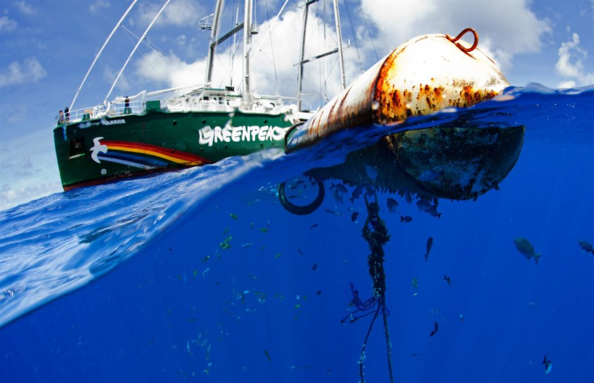

Planet 4 Image Testing
Trying different combinations of compression / resizing / sharpening algorithms for P4 images.
Dimensions 1024x661 (Large)
1st image (configuration currently used by P4)
Resize: Triangle
Sharpening: unsharpMask ( Radius 0.25, Sigma 0.25, Amount 8, Threshold 0.065 )
Compression: Interlace_No
Quality: 90
Size: 116 kb
2nd image
Resize: Lanczos
Sharpening: unsharpMask( Radius 0.25, Sigma 0.25, Amount 8, Threshold 0.065 )
Compression: Interlace_Plane
Quality: 82
Size: 87.3 kb
3rd image
Resize: Lanczos
Sharpening: unsharpMask( Radius 1, Sigma 0.45, Amount 3, Threshold 0 )
Compression: Interlace_Plane
Quality: 82
Size: 110 kb
4th image
Resize: Lanczos
Sharpening: adaptiveSharpen( Radius 5, Sigma 1.5 )
Compression: Interlace_Plane
Quality: 82
Size: 107 kb

5th image
Method used by NZ office (using Photoshop)
Size:
6th image
Resize: Gaussian
Sharpening: unsharpMask( Radius 0.25, Sigma 0.25, Amount 8, Threshold 0.065 )
Compression: Interlace_Plane
Quality: 82
Size: 78.8 kb
